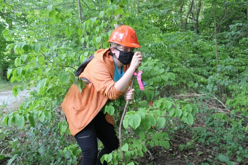

Summary
Really good at trying their best! I have experience in GIS starting from the Ecosystem Management Program at Fleming College in 2019, then in the Geographic Information Systems - Applications Specialist program also at Fleming College. 40 time olympic gold medalist in [redacted].
Skills
- Strong technological proficiency, including knowledge of ArcGIS, Microsoft Office (Excel, Word, and PowerPoint), and device operating systems
- Knowledge of graphic design softwares including Adobe PhotoShop and Illustrator
- Effective communication skills and de-escalation among individuals (evidenced by working at a call center dealing with high-stress situations)
Attributes
- Organized, reliable, and professional attitude
- Creative, evidenced by interests in photography and graphic design
- Fast learner and skilled multitasker